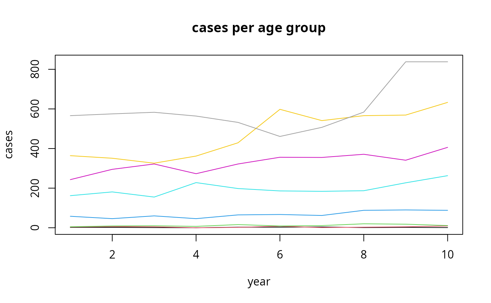
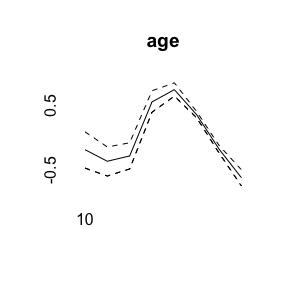
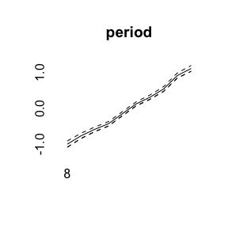
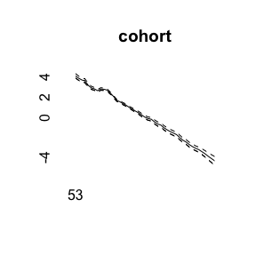
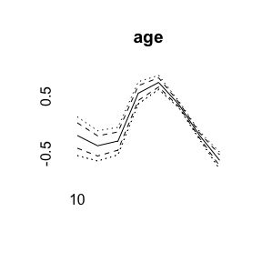
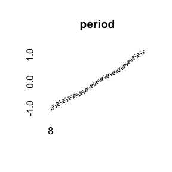
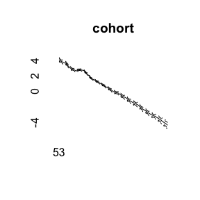
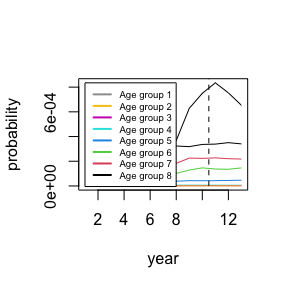

Short Introduction to BAMP
Volker Schmid
2026-08-07
Source:vignettes/largevignettes/bamp.Rmd
bamp.RmdIntroduction
Age-period-cohort (APC) models decompose incidence or mortality rates into three smooth components: an age effect (how risk varies across age groups), a period effect (how risk varies over calendar time) and a cohort effect (how risk varies across birth cohorts). BAMP fits such models in a Bayesian framework via MCMC and provides tools to check convergence, inspect the fitted effects, and predict future cases.
Data example
BAMP includes a data example: cases and
population, matrices of observed case counts and population
at risk, cross-classified by calendar year (rows) and age group
(columns).
data(apc)
plot(cases[,1],type="l",ylim=range(cases), ylab="cases", xlab="year", main="cases per age group")
for (i in 2:8)lines(cases[,i], col=i)
For simulating your own APC data, see vignette(“simulation”, package=“bamp”).
APC model with random-walk first-order priors
We fit a model with a first-order random walk ("rw1")
prior on each of the age, period and cohort effects – a common default
that assumes each effect changes smoothly, without a systematic trend,
between neighbouring levels. periods_per_agegroup tells
bamp() how many calendar years each age group spans, which
is needed to map age and period onto the cohort dimension.
model1 <- bamp(cases, population, age="rw1", period="rw1", cohort="rw1",
periods_per_agegroup = 5)bamp() automatically checks MCMC convergence using the
Gelman-Rubin diagnostic and warns if the chains have not converged. We
can also run this check manually:
checkConvergence(model1)## [1] TRUEprint() summarises the fitted model: posterior estimates
of the smoothing (precision) parameters, and the deviance and DIC, which
are useful for comparing models (see vignette(“modeling”,
package=“bamp”) for model selection):
print(model1)##
## Model:
## age (rw1) - period (rw1) - cohort (rw1) model
## Deviance: 230.12
## pD: 36.60
## DIC: 266.72
##
##
## Hyper parameters: 5% 50% 95%
## age 0.436 1.108 2.295
## period 48.842 128.964 320.787
## cohort 35.190 61.080 103.190
##
##
## Markov Chains convergence checked succesfully using Gelman's R (potential scale reduction factor).The fitted age, period and cohort effects can be plotted with point-wise posterior quantiles:
plot(model1)


By default the plot shows the median and a 90% interval; other quantiles can be requested explicitly:



For other prior choices (e.g. second-order random walks, heterogeneity, covariates), see vignette(“modeling”, package=“bamp”).
Prediction
Because the period and cohort effects are modelled as random walks, their most likely continuation is a flat extrapolation with growing uncertainty – which lets us predict cases for upcoming years:
pred <- predict_apc(object=model1, periods=3)The plot below shows the predicted probability of a case per age group; the dashed vertical line marks the start of the 3-year forecast:
m<-max(pred$pr[2,,])
plot(pred$pr[2,,8],type="l", ylab="probability", xlab="year", ylim=c(0,m))
for (i in 7:1)
lines(pred$pr[2,,i],col=8-i)
legend(1,m,col=8:1,legend=paste("Age group",1:8),lwd=2,cex=0.6)
lines(c(10.5,10.5),c(0,1),lty=2)
For more details, see vignette(“prediction”, package=“bamp”).